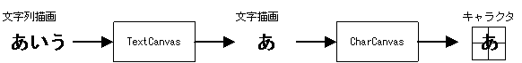
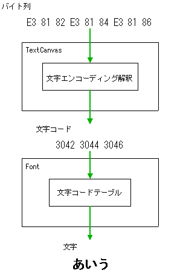

文字列描画ライブラリは 文字描画ライブラリ を用いて文字列の描画を行うライブラリです。 文字列をエンコーディングに従って文字に分解し、 レイアウトした上で文字描画ライブラリを用いて描画していきます。
文字列描画ライブラリでは TextCanvas と呼ぶ仮想描画面に対して文字列描画を行います。
TextCanvas は内部に CharCanvas を持ち、TextCanvas への文字列描画は
最終的には CharCanvas が描画対象とするキャラクタに対して行われます。
この他に TextCanvas は文字間隔や行間隔などの文字列を描画するために必要なパラメータも
持っています。

文字列描画ライブラリの関数は以下のように大きく4つのグループに分ける事ができます。
|
TextCanvas 構築 TextCanvas を初期化・構築する関数群です。 |
NNS_G2dTextCanvasInit() |
|
TextCanvas アクセサ TextCanvas の各パラメータを取得・設定する関数群です。 |
NNS_G2dTextCanvasGetCharCanvas()NNS_G2dTextCanvasSetCharCanvas()NNS_G2dTextCanvasGetFont()NNS_G2dTextCanvasSetFont()NNS_G2dTextCanvasGetHSpace()NNS_G2dTextCanvasSetHSpace()NNS_G2dTextCanvasGetVSpace()NNS_G2dTextCanvasSetVSpace() |
|
文字列描画サイズ計算 文字列の描画サイズを計算する関数群です。 |
NNS_G2dTextCanvasGetStringWidth()NNS_G2dTextCanvasGetTextWidth()NNS_G2dTextCanvasGetTextHeight()NNS_G2dTextCanvasGetTextRect() |
|
文字列描画 TextCanvas に文字列を描画する関数群です。 |
NNS_G2dTextCanvasDrawString()NNS_G2dTextCanvasDrawText()NNS_G2dTextCanvasDrawTextRect()NNS_G2dTextCanvasDrawTaggedText() |
この分類と文字描画ライブラリの関数分類を用いると
文字列描画の大まかな流れは以下のようになります。
(1) CharCanvas 構築関数で CharCanvas を構築する。
スクリーン・OAM設定関数でスクリーンまたはOAMの設定を行う。
またはセル構築関数でセルを構築する
↓
(2) TextCanvas 構築関数で TextCanvas を構築する。
↓
(3) CharCanvas 塗りつぶし関数で CharCanvas をクリア。
↓
(4) 文字列描画関数で文字列描画
↓
以下(3)(4)を必要な時に必要なだけ行う。
(5) (1) でセルの構築を行った場合はレンダラを用いてセルの描画を行う
TextCanvas が扱うことのできる文字エンコーディングは使用するフォントに依存します。
文字列を引数とする関数は
マクロ NNS_G2D_UNICODE
を定義する事でワイド文字列を引数とするように変更する事が出来ますが、
それだけではワイド文字列を表示する事が出来ません。
ワイド文字列を表示するには
NNS_G2D_UNICODE
を定義した上で UTF-16 エンコーディング用のフォントを使用する必要があります。
逆に
NNS_G2D_UNICODE
を定義していない場合でも Shift_JIS や UTF-8 文字を表示するには
それぞれのエンコーディング用のフォントを使用する必要があります。

2005/07/12 セルを用いる場合を追加
2005/05/25 初版